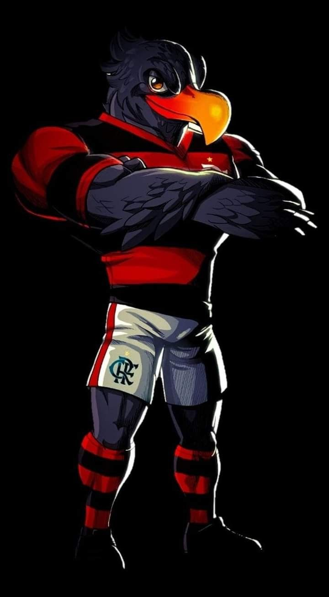
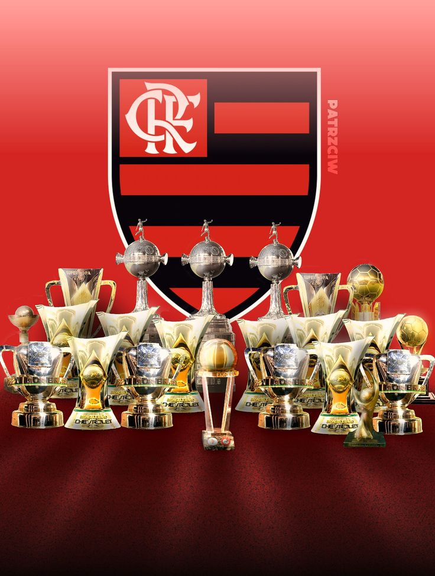

História do Mascote do Flamengo
O Flamengo foi fundado em 17 de novembro de 1895, mas a data oficial da fundação foi alterada para 15 de novembro, feriado nacional da Proclamação da República. Seis jovens moradores do bairro queriam disputar remo com outros rapazes do Rio de Janeiro e por isso decidiram criar o como Grupo de Regatas do Flamengo, rebatizado como Clube de Regatas do Flamengo, em 28 de outubro de 1902.
Surgimento do mascote
O mascote do Flamengo foi adotado em resposta a uma provocação racista que as outras torcidas faziam com o time, que tinha grande número de negros entre os torcedores. Quando o time entrava em campo, as torcidas adversárias gritavam “urubu, urubu”. Para transformar a ave em uma afronta aos adversários, um grupo de 4 amigos flamenguistas decidiu, então, soltar um urubu com uma bandeira do time em um clássico contra o Botafogo, em 1º de junho de 1969. Como se tivesse sido ensaiado, o urubu sobrevoou as torcidas e pousou sobre o gramado com a bandeira, calando a torcida do Botafogo e sendo ovacionado pelos flamenguistas: “é urubu, é urubu”. O time venceu a partida e nunca mais deixou o mascote.
Títulos do Clube
O Flamengo tem, até o momento, em seu currículo 7 Campeonatos Brasileiros, conquistados em 1980, 1982, 1983, 1987, 1992, 2009 e 2019. O time ainda conta com o Mundial de 1981 e duas Taças Libertadores da América, em 1981 e 2019.
A equipe de futebol do Flamengo foi criada em decorrência de uma desavença em seu rival Fluminense, em 1911. O atleta Alberto Borgerth, que jogava futebol no Fluminense e remava no Flamengo, propôs a criação de uma seção de futebol no clube de regatas e foi assim que nasceu o Departamento de Esportes Terrestres.